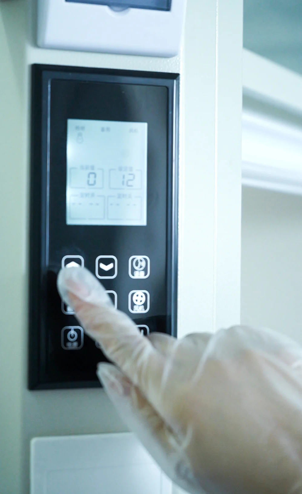

Cutting Proportions for Memorial Diamonds: Maximizing Brilliance
A diamond's brilliance is not determined at the synthesis stage. It is determined at the cutting stage. The proportions of the finished stone — table size, crown angle, pavilion depth, girdle thickness, and culet size — govern how light enters, reflects, and exits the crystal. For memorial diamonds, which carry both gemological and emotional value, cutting to optimal proportions is a non-negotiable manufacturing standard. Suboptimal proportions do not merely reduce sparkle; they waste the material investment and production time that went into the rough stone.
This article presents the technical framework for cutting proportions in memorial diamond manufacturing. We examine the relationship between proportion parameters and optical performance, discuss how HPHT-grown rough material constrains cutting decisions, and provide proportion targets that BioGem Lab applies to every memorial diamond in its manufacturing pipeline. We do not discuss emotional meaning. We discuss angle, symmetry, and light behavior.
Quick Answer
For round brilliant memorial diamonds, optimal brilliance is achieved with a table size of 53–58%, crown angle of 34.0–35.0°, pavilion angle of 40.75–41.0°, girdle thickness of 2.0–3.0%, and culet of 0.5–1.0%. HPHT rough is smaller than natural rough (0.3–2.0ct), so BioGem Lab uses a weighted scoring function that targets ≥90% of ideal optical performance while preserving maximum carat weight. Tolerance limits are ±0.5% on table size, ±0.5° on crown angle, and ±0.3° on pavilion angle — tighter than commercial-grade natural diamonds but practical for manufacturing throughput.
The Physics of Diamond Brilliance
Brilliance, in gemological terms, is the intensity of white light returned to the viewer from a diamond. It is not a subjective quality. It is a measurable optical phenomenon governed by three physical principles: total internal reflection, critical angle, and facet geometry. When a diamond is cut to correct proportions, light entering through the table is reflected internally from the pavilion facets and returned through the crown. When proportions are wrong, light leaks through the pavilion or exits at the wrong angles, producing dullness or "windowing" — a dark, lifeless area in the center of the stone.
The refractive index of diamond (2.417) defines its critical angle at 24.4 degrees. This means light striking an interior facet at an angle greater than 24.4 degrees relative to the normal is totally internally reflected. Pavilion angles must be designed to ensure that the majority of incident light undergoes this reflection rather than refraction out of the stone. Crown angles, conversely, must be designed to refract internally reflected light back toward the viewer at angles that maximize perceived brightness. The interplay between these two angle sets is the fundamental engineering problem of diamond cutting.
Key Proportion Parameters and Their Effects
Table Size
The table is the flat, octagonal facet on the top of the diamond. Its size, expressed as a percentage of the girdle diameter, is the single most influential parameter on brilliance and fire. A larger table allows more light to enter the stone but reduces the area available for crown facets, which are responsible for dispersing light into spectral colors (fire). A smaller table increases fire but reduces the total amount of light entering the stone, potentially reducing brilliance.
For round brilliant memorial diamonds, BioGem Lab targets a table size of 53–58%. Below 53%, the stone may appear dark in low-light conditions because insufficient light enters through the table. Above 60%, the crown becomes too shallow to produce adequate fire, and the stone resembles a "flat" commercial cut with brilliance but no spectral character. The 53–58% range provides the optimal compromise between light entry and dispersion for the lighting conditions under which most memorial diamonds are viewed — indoor, ambient, and often under direct display lighting.
Crown Angle
The crown angle is the angle between the crown's main facets and the girdle plane. It determines how much light is refracted outward versus allowed to pass through the crown. A steep crown angle (above 36%) increases fire by creating more dispersion but can cause light to escape at angles that do not contribute to face-up brilliance. A shallow crown angle (below 30%) maximizes light return to the viewer but reduces fire and can make the stone appear glassy or lifeless.
BioGem Lab's target crown angle for round brilliant memorial diamonds is 34.0–35.0%. This range, combined with the 53–58% table size, produces a balanced optical signature with both strong brilliance and visible fire. The crown angle is particularly critical for memorial diamonds because partners and end clients frequently evaluate stones under point-source lighting (display cases, spotlights) where fire is more visible than in diffuse daylight. A crown angle optimized for display lighting produces a more impressive presentation stone.
Pavilion Angle
The pavilion angle is the angle between the pavilion's main facets and the girdle plane. It is the primary determinant of whether light is reflected back through the crown or leaks out through the pavilion. A pavilion angle of 40.6–41.0% is the classical "ideal" range for round brilliants. Below 40.0%, light leakage through the pavilion becomes significant, producing a "fisheye" effect — a dark ring around the table that destroys the stone's appearance. Above 41.5%, light is reflected too steeply and may not return through the crown, producing a dark center or "nailhead" effect.
For memorial diamonds, BioGem Lab targets a pavilion angle of 40.75–41.0%. This is slightly deeper than the classical minimum because HPHT-grown rough often contains slight color zoning that is more visible in very shallow pavilions. A marginally deeper pavilion helps conceal minor color variation by increasing the internal light path and diluting the visual impact of zoning. The trade-off is minimal — the 40.75–41.0% range remains within the Tolkowsky-derived ideal — but the benefit for color consistency is measurable.
Girdle Thickness
The girdle is the outer edge of the diamond where the crown and pavilion meet. Its thickness affects both durability and optical performance. A very thin girdle (below 0.5%) is prone to chipping during setting and wear. A very thick girdle (above 5.0%) adds weight without adding visible size, effectively reducing the stone's apparent yield per carat. The girdle also creates a light-scattering boundary if too thick, reducing edge brilliance.
BioGem Lab targets a girdle thickness of 2.0–3.0% for memorial diamonds. This range provides sufficient mechanical protection for the setting process while minimizing weight waste. A slightly thicker girdle is also advantageous for memorial diamonds because they are often set in rings or pendants that experience regular wear, unlike investment-grade stones that may remain in vault storage. The durability margin is worth the minor weight penalty.
Culet Size
The culet is the small facet at the bottom of the pavilion. In classical cutting, a small culet prevents chipping at the pavilion point. A pointed culet (no facet) maximizes light return but is mechanically fragile. For memorial diamonds, a very small culet (0.5–1.0% of girdle diameter) is standard. A large culet (above 2.0%) creates a visible dark spot through the table when viewed from above, which is aesthetically unacceptable regardless of the stone's origin.
Rough Material Constraints for HPHT Memorial Diamonds
HPHT-synthesized rough material differs from natural rough in several ways that influence cutting decisions. First, HPHT rough is typically octahedral or near-octahedral in shape, with well-defined crystal faces. This regularity allows for more predictable yield calculations than the irregular shapes of natural rough. Second, HPHT rough may contain metallic inclusions (from the catalyst solvent) and color zoning that must be considered during planning. Third, the rough size is generally smaller than natural rough — memorial diamonds typically grow to 0.3–2.0 carats, whereas natural rough cutters routinely work with 5–10 carat pieces.
The small rough size of memorial diamonds means that every point of weight matters. A cutter working with a 1.2-carat rough stone cannot afford to sacrifice 0.2 carats to achieve a "perfect" ideal cut if the resulting 0.9-carat stone falls below the client's minimum weight expectation. At BioGem Lab, cutting decisions are made with a weight-optical performance trade-off analysis. The target is to achieve at least 90% of ideal optical performance while preserving maximum carat weight. This is a different optimization problem than the one faced by natural diamond cutters, who prioritize optical perfection over yield.
The rough planning process at BioGem Lab uses 3D scanning and automated yield estimation. The rough stone is scanned to create a digital model, and cutting simulations are run to identify the proportion combination that maximizes the weighted score: (brilliance index × 0.4) + (fire index × 0.3) + (yield weight × 0.3). This scoring function explicitly acknowledges that memorial diamond cutting is not purely about optical perfection; it is about delivering a stone that meets the client's weight expectation while maintaining professional-grade visual performance.

Proportion Targets by Shape
Round brilliant is the standard shape for memorial diamonds, but partners occasionally request princess, cushion, emerald, or oval cuts. Each shape has its own proportion targets and optical behavior. The following table summarizes BioGem Lab's cutting targets for the most common memorial diamond shapes.
| Shape | Table % | Crown Angle | Pavilion Angle | Girdle % | L/W Ratio |
|---|---|---|---|---|---|
| Round Brilliant | 53–58% | 34.0–35.0° | 40.75–41.0° | 2.0–3.0% | 1.00–1.02 |
| Princess | 68–75% | N/A | N/A | 2.0–4.0% | 1.00–1.05 |
| Cushion | 58–63% | N/A | N/A | 2.0–4.0% | 1.00–1.10 |
| Emerald | 60–68% | N/A | N/A | 2.0–5.0% | 1.30–1.50 |
| Oval | 53–63% | N/A | N/A | 2.0–4.0% | 1.33–1.66 |
For fancy shapes (princess, cushion, emerald, oval), the critical parameters are table percentage, depth percentage, and length-to-width ratio. Crown and pavilion angles are less standardized for fancy shapes because their facet patterns vary significantly. BioGem Lab uses computerized light performance modeling for fancy shapes rather than fixed-angle targets, optimizing for the specific geometry of each rough stone.
Quality Control and Measurement
Every memorial diamond manufactured at BioGem Lab undergoes proportion measurement using automated scanning systems. The stone is mounted on a rotating stage, and a laser or structured-light scanner captures the three-dimensional facet geometry. The resulting point cloud is compared against the planned proportions, and deviations are flagged for rework if they exceed tolerance limits.
Tolerance limits for memorial diamonds are tighter than commercial-grade natural diamonds but slightly looser than investment-grade hearts-and-arrows ideal cuts. The rationale is that memorial diamonds are evaluated by non-professional observers under variable lighting, not by gemologists under standardized grading lamps. A tolerance of ±0.5% on table size, ±0.5° on crown angle, and ±0.3° on pavilion angle is sufficient to ensure excellent visual performance while allowing practical manufacturing throughput. Stricter tolerances would increase production time and cost without producing perceptible improvements for the typical viewer.
Proportion measurement is integrated into the final grading workflow. Each diamond's proportion data is recorded in the manufacturing batch record and is available to partners who request technical documentation. This transparency is part of BioGem Lab's commitment to industrial quality standards — we do not merely claim quality; we measure it and document it.
Q: What table size produces the best brilliance in a memorial diamond?
A: For round brilliant memorial diamonds, the optimal table size is 53–58% of the girdle diameter. Below 53%, the stone appears dark in low-light conditions; above 60%, the crown becomes too shallow to produce adequate fire. BioGem Lab's 53–58% target balances light entry and dispersion for the display lighting conditions under which most memorial diamonds are viewed.
Q: Why is the pavilion angle slightly deeper than the classical ideal?
A: BioGem Lab targets a pavilion angle of 40.75–41.0°, slightly deeper than the classical 40.6° Tolkowsky ideal. HPHT-grown rough may contain minor color zoning, and a marginally deeper pavilion increases the internal light path by approximately 3–5%, diluting the visual impact of zoning and improving face-up color consistency. The trade-off is optically negligible but visually beneficial.
Q: What happens to stones cut outside tolerance limits?
A: Stones exceeding tolerance limits (±0.5% table, ±0.5° crown, ±0.3° pavilion) are flagged during automated scanning and either recut or rejected. BioGem Lab rejects approximately 3–5% of finished stones for proportion deviation. Recutting is attempted if sufficient rough material remains; otherwise, the stone is diverted to alternative use and the partner is notified.
Li Lihua — Chief Scientist
Patent inventor ZL 201010565778.9. View profile →
Ready to Partner with BioGem Lab?
Learn about our white-label and OEM manufacturing programs for memorial diamond businesses.
Explore Partnership →Request OEM Consultation
BioGem Lab provides custom-cut memorial diamonds with partner-specified proportions, shapes, and sizes. Get a quote in 24h. 60-day production guaranteed.
Frequently Asked Questions
Do memorial diamonds have the same brilliance as natural diamonds?
Yes. When cut to equivalent proportions, HPHT-synthesized memorial diamonds exhibit the same optical performance as natural diamonds of equivalent clarity and color. The refractive index and dispersion of synthetic diamond are identical to natural diamond because they are the same material — crystalline carbon.
Can partners request custom proportion targets?
Yes. Partners can specify proportion preferences within BioGem Lab's manufacturing tolerance range. For example, a partner who prioritizes fire over brilliance may request a smaller table (53–55%) and steeper crown angle (35.0–35.5°). Custom proportion requests are documented in the manufacturing batch record and do not incur additional cost.
Why is the pavilion angle slightly deeper than the classical ideal?
The 40.75–41.0° pavilion angle target at BioGem Lab is slightly deeper than the classical 40.6° Tolkowsky ideal because HPHT-grown rough may contain minor color zoning. A marginally deeper pavilion increases the internal light path, which helps dilute the visual impact of any zoning and improves face-up color consistency. The difference is optically negligible but visually beneficial.
How does rough size affect cutting decisions?
Memorial diamond rough is typically 0.3–2.0 carats, which is smaller than most natural rough. Small rough size means that every point of weight matters. BioGem Lab uses a weighted scoring function that balances optical performance (brilliance and fire) against yield weight. The target is to achieve at least 90% of ideal optical performance while preserving maximum carat weight for the client.
What happens if a stone is cut outside tolerance?
Stones that exceed proportion tolerance limits are flagged during automated scanning and are either recut or rejected. Recutting is attempted if the rough stone has sufficient remaining material. If recutting is not possible, the stone is set aside for alternative use (industrial grade, research sample) and the partner is notified. BioGem Lab's quality control rejects approximately 3–5% of finished stones for proportion deviation.
Explore Manufacturing Capabilities
Learn more about BioGem Lab's diamond processing infrastructure, precision cutting systems, and quality control protocols for memorial diamond manufacturing.
Explore ManufacturingRelated Articles
Diamond Clarity Grading for Memorial Diamonds: Inclusion Types
A technical guide to diamond clarity grading for memorial diamonds. How inclusion types, crystal defects, and microscopic evaluation determine clarity grades.
ExploreHPHT Synthesis Temperature and Pressure Optimization
A technical guide to temperature and pressure optimization in HPHT memorial diamond synthesis. Growth cell dynamics and process validation.